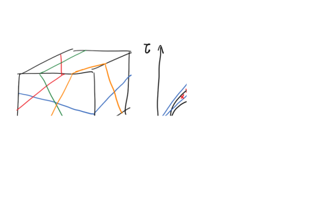

Next: 6.4 Tensile fractures and Up: 6. Wellbore Stability Previous: 6.2 Kirsch solution for Contents
Wellbore breakouts are a type of rock failure around the wellbore wall and occur when the stress anisotropy
 surpasses the shear strength limit of the rock.
Maximum anisotropy is found at
surpasses the shear strength limit of the rock.
Maximum anisotropy is found at
 and
and  , for which
, for which
| (6.7) |
![\includegraphics[scale=0.65]{.././Figures/split/7-5.pdf}](img790.svg) |
Hence, replacing  and
and  into a shear failure equation (Eq. ) permits finding the mud pressure
into a shear failure equation (Eq. ) permits finding the mud pressure
 that would produce a tiny shear failure (or breakout) at
and :
that would produce a tiny shear failure (or breakout) at
and :
| (6.8) |
Hence,
 |
(6.9) |
Mud pressure
would extend rock failure and breakouts further in the neighborhood of
and (See Fig. 6.9).
Thus,
is the lowest mud pressure before initiation of breakouts.
![\includegraphics[scale=0.50]{.././Figures/split/7-7.pdf}](img794.svg) |
PROBLEM 6.1: Calculate the minimum mud weight (ppg) in a vertical wellbore for avoiding shear failure (breakouts) in a site onshore at 7,000 ft of depth where  4,300 psi and
4,300 psi and  6,300 psi and with hydrostatic pore pressure.
The rock mechanical properties are
6,300 psi and with hydrostatic pore pressure.
The rock mechanical properties are  3,500 psi,
3,500 psi,  0.6, and
0.6, and  = 800 psi.
= 800 psi.
SOLUTION
Hydrostatic pore pressure results in:
 ft psi/ft
ft psi/ft psi
psi
The effective horizontal stresses are:
 psi
psi psi
psi psi
psi
psi psi
The friction angle is
, and therefore, the friction coefficient  is
is

Thus, the minimum mud pressure for avoiding shear failure (breakouts) is
 psi
psi
This pressure can be achieved with an equivalent circulation density of
For a given set of problem variables (far field stress, pore pressure, and mud pressure), we can calculate the required strength of the rock to have a stable wellbore.
Let us consider the example of Fig. 6.10 that shows the required  to resist shear failure assuming the friction angle is
to resist shear failure assuming the friction angle is
 .
For example, if the rock had a
.
For example, if the rock had a
 MPa, one may expect a
MPa, one may expect a
 wide breakout in Fig. 6.10.
wide breakout in Fig. 6.10.
Alternatively, you could solve the previous problem analytically.
The procedure consists in setting shear failure at the point in the wellbore at an angle
 from
from  or .
Hence, at a point on the wellbore wall at
:
or .
Hence, at a point on the wellbore wall at
:
 |
(6.10) |
Say hoop stress reaches the maximum principal stress anisotropy allowed by the Mohr-Coulomb shear failure criterion (
 ) where the breakout begins (rock about to fail - Fig. 6.11), then
) where the breakout begins (rock about to fail - Fig. 6.11), then
![$\displaystyle \left[ -(P_W - P_p) + (\sigma_{Hmax} + \sigma_{hmin})
- 2(\sigma_{Hmax} - \sigma_{hmin}) \cos (2 \theta_B) \right]
= UCS + q (P_W - P_p)$](img820.svg) |
(6.11) |
which after some algebraic manipulations results in:
The breakout angle is
| (6.13) |
The procedure assumes the rock in the breakout (likely already gone) is still resisting hoop stresses and therefore it is not accurate for large breakouts (
 ).
).
You could also calculate the wellbore pressure for a predetermined breakout angle by rearranging Eq. 6.12 to
 |
(6.14) |
PROBLEM 6.2: Calculate the breakout angle in a vertical wellbore for a mud weight of 10 ppg in a site onshore at 7,000 ft of depth where 4,300 psi and 6,300 psi and with hydrostatic pore pressure.
The rock mechanical properties are 3,500 psi, 0.6, and = 800 psi.
SOLUTION
The problem variables are the same of Problem 6.1.
For a 10 ppg mud, the resulting mud pressure is
Hence, the expected wellbore breakout angle is
![$\displaystyle w_{BO} = 180^{\circ} - \arccos \left[ \frac{ 3220 \text{ psi} + 1...
...3220 \text{ psi} - 1220 \text{ psi})} \right] = 66 ^{\circ} \: \: \blacksquare
$](img827.svg)
Breakouts and tensile induced fractures (Section 6.4) can be identified and measured with borehole imaging tools (Fig. 6.12).
Breakouts appear as wide bands of longer travel time or higher electrical resistivity in borehole images.
Tensile fractures appear as narrow stripes of longer travel time or higher electrical resistivity.
Borehole images also permit identifying the direction of the stresses that caused such breakouts or tensile induced fractures.
For example, the azimuth of breakouts coincides with the direction of  in vertical wells.
in vertical wells.
Breakouts can also be detected from caliper measurements. Caliper tools permit measuring directly the size and shape of the borehole (https://petrowiki.org/Openhole_caliper_logs). Thus, the caliper log is extremely useful to measure breakouts and extended breakouts (washouts). For the same mud density, the caliper log reflects changes of rock properties along the well and correlate with other well logging measurements.
Breakouts are a consequence of stress anisotropy in the plane perpendicular to the wellbore.
Hence, knowing the size and orientation of breakouts permits measuring and calculating the direction and magnitude of stresses that caused such breakouts.
This technique is very useful for measuring orientation of horizontal stresses.
In addition, if we know the rock properties and , then it is possible to calculate the maximum principal stress in the plane perpendicular to the wellbore. For example, for a vertical wellbore the toal maximum horizontal stress would be
|  | (6.15) |
![\includegraphics[scale=0.65]{.././Figures/split/7-10.pdf}](img818.svg)